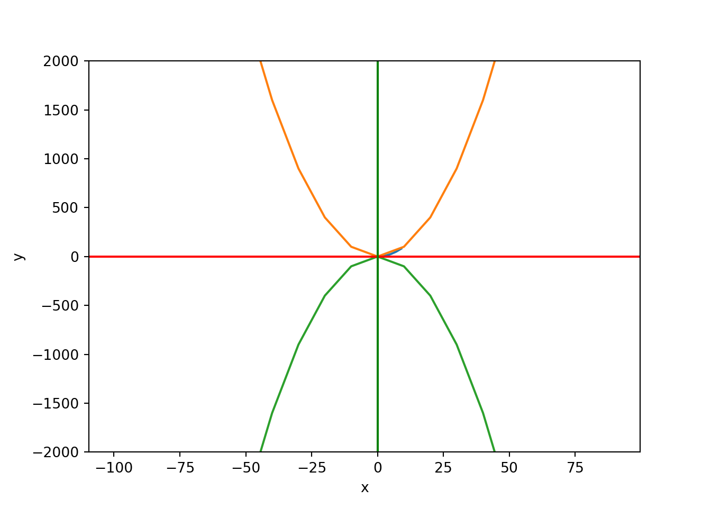
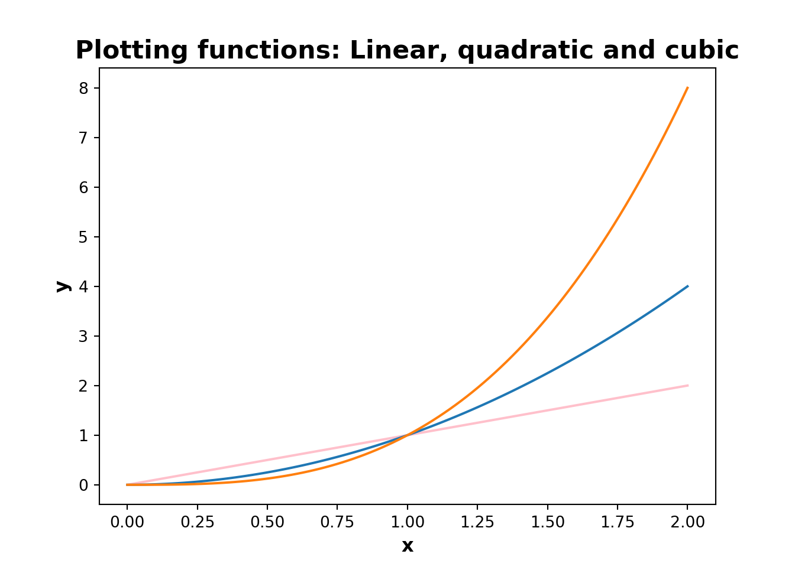

Chapter 4 Python程式設計
4.1 什麼是Python？
- 直譯式，高階計算機語言
- 由荷蘭程式設計師Guido van Rossum發明
- 以電視節目Monty Python’s Flying Circus （飛行馬戲團）中的Monty Python 命名
- 開源程式語言

Figure 4.1: Python Inventor Guido van Rossum
4.1.1 為何選擇Python？
- 簡單
- 科學計算和數據科學特定領域具有大型生態系統
- 用戶們建構的套件
- 數據管理
- 互聯網數據
- 大數據處理
4.2 Python基本程式包：
- NumPy - 操縱基於同構數組的數據
- Pandas - 操縱建構和標記數據
- SciPy - 用於常見的科學計算任務
- Matplotlib - 數據視覺化
- IPython - 使用Jupyter筆記本交互式執行和共享程式碼
- Scikit-Learn - 機器學習
4.3 Python IDE整合式開發環境
整合式開發環境的選擇至關重要！有很多IDE可用於python編程和開發。僅舉幾例：
- IDLE
- Pycharm
- Jupyter Notebook
- Spyder
- Rodeo
- R Studio
4.4 基本操作和賦值
# Python example program 0
# Some basics
# Print a one-line message
print ("Hello NCHU 中興大學 friends!!")
# Create some variables## Hello NCHU 中興大學 friends!!x=5
y=3
# Perform some mathematical operations
x*y## 15x**y## 125x%y## 24.4.1 導入套件庫
#Import Python Libraries
import numpy as np
import scipy as sp
import pandas as pd
import matplotlib as mpl
import seaborn as sns
import pandas as pd
import matplotlib.pyplot as plt
import seaborn as sns4.4.2 載入資料
# Import a text file in csv format
import pandas as pd
CO2 = pd.read_csv("https://raw.githubusercontent.com/kho777/data-visualization/master/data/CO2.csv")
# Take a glimpse of the data file
CO2.head()## country CO2 _kt CO2pc CO2percent
## 0 Australia 446,348 18.6 1.23%
## 1 United States 5,172,336 16.1 14.26%
## 2 Saudi Arabia 505,565 16.0 1.39%
## 3 Canada 555,401 15.5 1.53%
## 4 Russia 1,760,895 12.3 4.86%4.4.3 簡單的繪圖
# Creating variables
xs = [1,3,5,7,9]
ys = [x**2 for x in xs]
# Simple plot
plt.plot(xs, ys)
xs = range(-100,100,10)
x2 = [x**2 for x in xs]
negx2 = [-x**2 for x in xs]
# Combined plot
plt.plot(xs, x2)
plt.plot(xs, negx2)
plt.xlabel("x")
plt.ylabel("y")
plt.ylim(-2000, 2000)## (-2000, 2000)plt.axhline(0,color="red") # horiz line
plt.axvline(0,color="green") # vert line
plt.show()
4.4.4 資料視覺化
import matplotlib.pyplot as plt
x = np.linspace(0, 2, 100)
plt.plot(x, x, label='linear',color="pink")
plt.plot(x, x**2, label='quadratic')
plt.plot(x, x**3, label='cubic')
plt.xlabel('x',fontsize=12,fontweight='bold')
plt.ylabel('y',fontsize=12,fontweight='bold')
plt.title("Plotting functions: Linear, quadratic and cubic", fontsize=16,fontweight='bold')
4.5 作業
This exercise is designed to run in class. Students are advised to install Anaconda 3 to own computer.
- Launch Jupyter Notebook from Anaconda
- On Applications pulldown menu, choose anaconda3
- Run sample programs from class GitHub (https://github.com/datageneration/dataprogramming/)
4.6 Python資源推薦：
- A Whirlwind Tool of Python: Getting started
- Datacamp: Online training courses
- Matplotlib.org: Data visualization